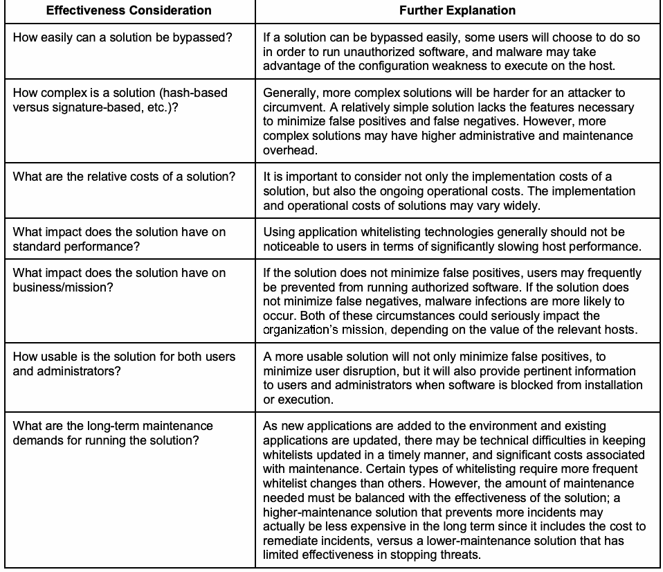

NIST SP 800-167 日本語訳
英語タイトル : Guide to Application Whitelisting日本語タイトル : アプリケーション・ホワイトリスティング・ガイド
公開日 : 2015-10-28
原文URL : https://csrc.nist.gov/pubs/sp/800/167/final
翻訳編集 : 自動生成
[要約] SP 800-167 は、使用を許可したアプリケーションの一覧であるホワイトリストの基礎を、組織が理解できるよう支援するガイドです。脅威、ホワイトリスティングの種類とモード、用途、ソリューションの評価に加え、開始、設計、プロトタイプの試験、導入、管理という計画と実装を説明します。調達、テスト、実装、保守を担当するセキュリティマネージャー、エンジニア、システム管理者などを対象とし、電子メールやモバイルコードなどのホワイトリスティングは範囲外です。
有志による非公式の日本語訳です。NIST および米国商務省が作成・承認・推奨したものではありません。要件の確認にはNIST の正式版 PDFを参照してください。
NIST Special Publication 800-167
NIST特別刊行物 800-167
Guide to Application Whitelisting
アプリケーション・ホワイトリスティング・ガイド
Adam Sedgewick Murugiah Souppaya Karen Scarfone
Adam Sedgewick、Murugiah Souppaya、Karen Scarfone
This publication is available free of charge from: http://dx.doi.org/10.6028/NIST.SP.800-167
本刊行物は以下から無料で入手できる：http://dx.doi.org/10.6028/NIST.SP.800-167
C O M P U T E R S E C U R I T Y
コンピュータセキュリティ
［NIST のロゴ。公的な標章のため、この非公式サイトには掲載していない。原本 PDF を参照。］
NIST Special Publication 800-167
NIST特別刊行物 800-167
Guide to Application Whitelisting
アプリケーション・ホワイトリスティング・ガイド
Adam Sedgewick
Adam Sedgewick
Information Technology Laboratory
情報技術研究所
Murugiah Souppaya
Computer Security Division
Murugiah Souppaya
コンピュータセキュリティ部門
Information Technology Laboratory
情報技術研究所
Karen Scarfone
Scarfone Cybersecurity
Clifton, VA
Karen Scarfone
Scarfone Cybersecurity
バージニア州クリフトン
This publication is available free of charge from: http://dx.doi.org/10.6028/NIST.SP.800-167
本刊行物は以下から無料で入手できる：http://dx.doi.org/10.6028/NIST.SP.800-167
October 2015
2015年10月
［米国商務省の紋章。公的な標章のため、この非公式サイトには掲載していない。原本 PDF を参照。］
U.S. Department of Commerce Penny Pritzker, Secretary
米国商務省 長官 Penny Pritzker
National Institute of Standards and Technology
国立標準技術研究所
Willie May, Under Secretary of Commerce for Standards and Technology and Director
Willie May、標準技術担当商務次官兼所長
Authority
法的根拠
This publication has been developed by NIST in accordance with its statutory responsibilities under the Federal Information Security Modernization Act (FISMA) of 2014, 44 U.S.C. § 3541 et seq., Public Law 113-283. NIST is responsible for developing information security standards and guidelines, including minimum requirements for federal information systems, but such standards and guidelines shall not apply to national security systems without the express approval of appropriate federal officials exercising policy authority over such systems. This guideline is consistent with the requirements of the Office of Management and Budget (OMB) Circular A-130.
本刊行物は、2014年連邦情報セキュリティ近代化法（FISMA）、合衆国法典第44編第3541条以下、公法113-283に基づく法定責務に従ってNISTが策定したものである。NISTは、連邦情報システムの最低要件を含む情報セキュリティ標準およびガイドラインを策定する責任を負う。ただし、国家安全保障システムに対する政策権限を行使する適切な連邦当局者の明示的な承認がない限り、これらの標準およびガイドラインは国家安全保障システムには適用されない。本ガイドラインは、行政管理予算局（OMB）通達A-130の要件と整合している。
Nothing in this publication should be taken to contradict the standards and guidelines made mandatory and binding on federal agencies by the Secretary of Commerce under statutory authority. Nor should these guidelines be interpreted as altering or superseding the existing authorities of the Secretary of Commerce, Director of the OMB, or any other federal official. This publication may be used by nongovernmental organizations on a voluntary basis and is not subject to copyright in the United States. Attribution would, however, be appreciated by NIST.
本刊行物のいかなる記述も、商務長官が法定権限に基づいて連邦機関に対し義務的かつ拘束力のあるものとした標準およびガイドラインに反するものと解釈すべきではない。また、本ガイドラインは、商務長官、OMB長官、その他いかなる連邦当局者の既存の権限を変更し、またはこれに取って代わるものと解釈すべきでもない。本刊行物は、非政府組織が任意で使用してよく、米国内では著作権の対象とならない。ただし、出典を明記してもらえればNISTとしては幸いである。
National Institute of Standards and Technology Special Publication 800-167 Natl. Inst. Stand. Technol. Spec. Publ. 800-167, 24 pages (October 2015) CODEN: NSPUE2
国立標準技術研究所 特別刊行物 800-167 Natl. Inst. Stand. Technol. Spec. Publ. 800-167、全24ページ（2015年10月） CODEN: NSPUE2
This publication is available free of charge from: http://dx.doi.org/10.6028/NIST.SP.800-167
本刊行物は以下から無料で入手できる：http://dx.doi.org/10.6028/NIST.SP.800-167
Certain commercial entities, equipment, or materials may be identified in this document in order to describe an experimental procedure or concept adequately. Such identification is not intended to imply recommendation or endorsement by NIST, nor is it intended to imply that the entities, materials, or equipment are necessarily the best available for the purpose. There may be references in this publication to other publications currently under development by NIST in accordance with its assigned statutory responsibilities. The information in this publication, including concepts and methodologies, may be used by federal agencies even before the completion of such companion publications. Thus, until each publication is completed, current requirements, guidelines, and procedures, where they exist, remain operative. For planning and transition purposes, federal agencies may wish to closely follow the development of these new publications by NIST. Organizations are encouraged to review all draft publications during public comment periods and provide feedback to NIST. All NIST Computer Security Division publications, other than the ones noted above, are available at http://csrc.nist.gov/publications.
本文書では、実験の手順または概念を適切に説明するために、特定の商業的な事業体、機器、または材料を挙げる場合がある。そのように挙げることは、NISTによる推奨または支持を意味するものではなく、また、それらの事業体、材料、または機器が当該目的にとって必ずしも入手可能な最良のものであることを意味するものでもない。本刊行物には、NISTが付与された法定責務に従って現在策定中の他の刊行物への言及が含まれる場合がある。本刊行物に含まれる情報は、概念および方法論を含め、そうした関連刊行物の完成前であっても連邦機関が使用してよい。したがって、各刊行物が完成するまでは、現行の要件、ガイドライン、および手順が存在する場合、それらが引き続き有効である。計画策定および移行の目的で、連邦機関はNISTによるこれらの新しい刊行物の策定状況を注視するとよい。組織には、パブリックコメント期間中にすべてのドラフト刊行物を確認し、NISTにフィードバックを提供することを推奨する。上記のものを除くNISTコンピュータセキュリティ部門のすべての刊行物は、http://csrc.nist.gov/publications で入手できる。
Comments on this publication may be submitted to: National Institute of Standards and Technology Attn: Computer Security Division, Information Technology Laboratory 100 Bureau Drive (Mail Stop 8930) Gaithersburg, MD 20899-8930
本刊行物に関する意見の送付先： National Institute of Standards and Technology 宛先：Computer Security Division, Information Technology Laboratory 100 Bureau Drive (Mail Stop 8930), Gaithersburg, MD 20899-8930
Reports on Computer Systems Technology
コンピュータシステム技術に関する報告書
The Information Technology Laboratory (ITL) at the National Institute of Standards and Technology (NIST) promotes the U.S. economy and public welfare by providing technical leadership for the Nation’s measurement and standards infrastructure. ITL develops tests, test methods, reference data, proof of concept implementations, and technical analyses to advance the development and productive use of information technology. ITL’s responsibilities include the development of management, administrative, technical, and physical standards and guidelines for the cost-effective security and privacy of other than national security-related information in federal information systems. The Special Publication 800-series reports on ITL’s research, guidelines, and outreach efforts in information system security, and its collaborative activities with industry, government, and academic organizations.
国立標準技術研究所（NIST）の情報技術研究所（ITL）は、国家の計測および標準の基盤に対して技術的リーダーシップを提供することにより、米国の経済と公共の福祉を促進している。ITLは、情報技術の開発と生産的な利用を推進するために、試験、試験方法、参照データ、概念実証の実装、および技術的分析を開発している。ITLの責務には、連邦情報システムにおける国家安全保障関連以外の情報について、費用対効果の高いセキュリティとプライバシーを実現するための、管理的、事務的、技術的、および物理的な標準およびガイドラインの策定が含まれる。特別刊行物800シリーズは、情報システムセキュリティに関するITLの研究、ガイドライン、および普及活動、ならびに産業界、政府機関、および学術機関との協力活動について報告するものである。
Abstract
概要
An application whitelist is a list of applications and application components that are authorized for use in an organization. Application whitelisting technologies use whitelists to control which applications are permitted to execute on a host. This helps to stop the execution of malware, unlicensed software, and other unauthorized software. This publication is intended to assist organizations in understanding the basics of application whitelisting. It also explains planning and implementation for whitelisting technologies throughout the security deployment lifecycle.
アプリケーションホワイトリストとは、組織内での使用が許可されたアプリケーションおよびアプリケーション構成要素の一覧である。アプリケーション・ホワイトリスティング技術は、ホワイトリストを用いて、ホスト上でどのアプリケーションの実行を許可するかを制御する。これは、マルウェア、ライセンスのないソフトウェア、その他の未許可ソフトウェアの実行を阻止するのに役立つ。本刊行物は、組織がアプリケーション・ホワイトリスティングの基本を理解するのを支援することを目的とする。また、セキュリティ導入ライフサイクル全体にわたるホワイトリスティング技術の計画と実装についても説明する。
Keywords
キーワード
access control; application control; application whitelisting; information security; software security; whitelisting
アクセス制御、アプリケーション制御、アプリケーション・ホワイトリスティング、情報セキュリティ、ソフトウェアセキュリティ、ホワイトリスティング
Acknowledgments
謝辞
The authors, Adam Sedgewick and Murugiah Souppaya of the National Institute of Standards and Technology (NIST) and Karen Scarfone of Scarfone Cybersecurity, wish to thank their colleagues, in particular Eric Chudow from the National Security Agency, who contributed to this publication, as well as the reviewers who provided feedback.
著者である国立標準技術研究所（NIST）のAdam SedgewickおよびMurugiah Souppaya、ならびにScarfone CybersecurityのKaren Scarfoneは、本刊行物に貢献した同僚、とりわけ国家安全保障局のEric Chudow、およびフィードバックを提供した査読者に謝意を表する。
Trademark Information
商標に関する情報
All registered trademarks belong to their respective organizations.
登録商標はすべて、それぞれの組織に帰属する。
Table of Contents
目次
Executive Summary ................................................................................................................. v
エグゼクティブサマリー ................................................................................................................. v
1. Introduction — 1
1. 序論 — 1
1.1 Purpose and Scope — 1
1.1 目的と適用範囲 — 1
1.2 Audience — 1
1.2 対象読者 — 1
1.3 Document Structure — 1
1.3 文書の構成 — 1
2. The Basics of Application Whitelisting — 2
2. アプリケーション・ホワイトリスティングの基礎 — 2
2.1 Threats — 2
2.1 脅威 — 2
2.2 Types of Application Whitelisting — 3
2.2 アプリケーション・ホワイトリスティングの種類 — 3
2.2.1 File and Folder Attributes — 3
2.2.1 ファイルとフォルダーの属性 — 3
2.2.2 Application Resources — 4
2.2.2 アプリケーションのリソース — 4
2.2.3 Whitelist Generation and Maintenance — 5
2.2.3 ホワイトリストの生成と保守 — 5
2.3 Application Whitelisting Modes — 5
2.3 アプリケーション・ホワイトリスティングのモード — 5
2.4 Uses of Application Whitelisting Technologies — 6
2.4 アプリケーション・ホワイトリスティング技術の用途 — 6
2.5 Operational Environment Differences — 7
2.5 運用環境の違い — 7
2.6 Evaluating Application Whitelisting Solutions — 7
2.6 アプリケーション・ホワイトリスティング・ソリューションの評価 — 7
2.7 Additional Considerations — 8
2.7 その他の考慮事項 — 8
3. Application Whitelisting Planning and Implementation — 9
3. アプリケーション・ホワイトリスティングの計画と実装 — 9
3.1 Initiation — 9
3.1 開始 — 9
3.2 Design — 11
3.2 設計 — 11
3.3 Prototype Testing — 11
3.3 プロトタイプの試験 — 11
3.4 Deployment — 12
3.4 導入 — 12
3.5 Management — 13
3.5 管理 — 13
List of Appendices
付録一覧
Appendix A— Security and Compliance Mapping — 14
付録A — セキュリティおよびコンプライアンスの対応付け — 14
Appendix B— Applying Application Whitelisting to Mobile Platforms — 15
付録B — モバイル・プラットフォームへのアプリケーション・ホワイトリスティングの適用 — 15
Appendix C— Acronyms and Abbreviations — 16
付録C — 頭字語と略語 — 16
Appendix D— Bibliography — 17
付録D — 参考文献 — 17
Executive Summary
エグゼクティブサマリー
An application whitelist is a list of applications and application components (libraries, configuration files, etc.) that are authorized to be present or active on a host according to a well-defined baseline. The technologies used to apply application whitelists—to control which applications are permitted to install or execute on a host—are called whitelisting programs, application control programs, or application whitelisting technologies. Application whitelisting technologies are intended to stop the execution of malware and other unauthorized software. Unlike security technologies such as antivirus software, which block known bad activity and permit all other, application whitelisting technologies are designed to permit known good activity and block all other. The purpose of this publication is to assist organizations in understanding the basics of application whitelisting and planning for its implementation.
アプリケーションホワイトリストとは、明確に定義されたベースラインに従って、ホスト上に存在すること、または動作することが許可されたアプリケーションおよびアプリケーション構成要素（ライブラリ、構成ファイルなど）の一覧である。アプリケーションホワイトリストを適用し、ホスト上でインストールまたは実行を許可するアプリケーションを制御するために用いられる技術は、ホワイトリスティングプログラム、アプリケーション制御プログラム、またはアプリケーションホワイトリスティング技術と呼ばれる。アプリケーションホワイトリスティング技術は、マルウェアやその他の未許可ソフトウェアの実行を阻止することを目的とする。既知の不正な活動を遮断し、それ以外をすべて許可するウイルス対策ソフトウェアなどのセキュリティ技術とは異なり、アプリケーションホワイトリスティング技術は、既知の正常な活動を許可し、それ以外をすべて遮断するよう設計されている。本刊行物の目的は、組織がアプリケーションホワイトリスティングの基本を理解し、その実装を計画できるよう支援することである。
Implementing the following recommendations should facilitate more efficient and effective application whitelisting use for federal departments and agencies.
以下の推奨事項を実施すれば、連邦政府の省庁および機関は、アプリケーション・ホワイトリスティングをより効率的かつ効果的に利用しやすくなるはずである。
Consider using application whitelisting technologies already built into the host operating system.
ホストのオペレーティングシステムに組み込まれているアプリケーション・ホワイトリスティング技術の利用を検討する。
Organizations should consider these technologies, particularly for centrally managed desktops, laptops, and servers, because of the relative ease in managing these solutions and the minimal additional cost. If built-in application whitelisting capabilities are not available or are determined to be unsuitable, then the alternative is to examine third-party solutions with robust centralized management capabilities.
組織は、特に一元管理されたデスクトップ、ノートPC、サーバーについて、これらの技術の利用を検討すべきである。これらのソリューションは管理が比較的容易で、追加コストもわずかだからである。組み込みのアプリケーション・ホワイトリスティング機能が利用できない、または適さないと判断される場合の代替策は、堅牢な一元管理機能を備えたサードパーティ製ソリューションを検討することである。
Use products that support more sophisticated application whitelisting attributes.
より高度なアプリケーションホワイトリスティング属性に対応した製品を使用する。
Choosing attributes is largely a matter of achieving the right balance of security, maintainability, and usability. Simpler attributes such as file path, filename, and file size should not be used by themselves unless there are strict access controls in place to tightly restrict file activity, and even then there are often significant benefits to pairing them with other attributes. A combination of digital signature/publisher and cryptographic hash techniques generally provides the most accurate and comprehensive application whitelisting capability, but usability and maintainability requirements can put significant burdens on the organization.
属性の選択は、主として、セキュリティ、保守性、使いやすさの適切なバランスをいかに取るかの問題である。ファイルパス、ファイル名、ファイルサイズなどの比較的単純な属性は、ファイル操作を厳しく制限する厳格なアクセス制御が整備されていない限り、単独で使用すべきではない。そうしたアクセス制御がある場合でも、他の属性と組み合わせることで大きな利点が得られることが多い。デジタル署名／発行者と暗号ハッシュの手法を組み合わせると、一般に最も正確で包括的なアプリケーションホワイトリスティング機能が得られるが、使いやすさや保守性の要件が組織に大きな負担をもたらすことがある。
Test prospective application whitelisting technology in monitoring mode.
導入候補のアプリケーションホワイトリスティング技術を監視モードでテストする。
It is highly recommended to test any prospective application whitelisting technology in a monitoring mode to see how it behaves before solution deployment. This testing should include a thorough evaluation of how the solution reacts to changes in software, such as installing an update. An application whitelisting technology might be considered unsuitable if, for instance, it had to be disabled in order to install security updates for the operating system or particular applications.
導入候補となるアプリケーションホワイトリスティング技術は、ソリューションを配備する前に監視モードでテストし、その動作を確認することを強く推奨する。このテストには、更新プログラムのインストールなど、ソフトウェアの変更に対してソリューションがどう反応するかの徹底的な評価を含めるべきである。たとえば、オペレーティングシステムや特定のアプリケーションのセキュリティ更新をインストールするために無効化しなければならないようなアプリケーションホワイトリスティング技術は、不適切と見なされる場合がある。
Address application whitelisting technology planning and deployment in a phased approach.
アプリケーションホワイトリスティング技術の計画と配備を段階的に進める。
A successful deployment will require a clear, step-by-step planning and implementation process. The use of a phased approach for deployment can minimize unforeseen issues and identify potential pitfalls early in the process. This model also allows for incorporating advances in new technology and adapting the technology to the ever-changing enterprise. In addition to following the security recommendations presented in this publication, organizations implementing application whitelisting technologies should also follow the recommendations from NIST Special Publication (SP) 800-53 Revision 4, Security and Privacy Controls for Federal Information Systems and Organizations, which defines minimum recommended management, operational, and technical controls for information systems based on impact categories.
導入を成功させるには、明確で段階を追った計画・実装プロセスが必要である。配備を段階的に進めることで、予期しない問題を最小限に抑え、潜在的な落とし穴を早期に特定できる。この方式では、新技術の進歩を取り入れ、絶えず変化する企業環境に技術を適応させることもできる。本書に示すセキュリティ推奨事項に加え、アプリケーションホワイトリスティング技術を導入する組織は、NIST特別刊行物（SP）800-53改訂第4版「連邦情報システムおよび組織のためのセキュリティおよびプライバシー管理策」の推奨事項にも従うべきである。同刊行物は、影響度カテゴリに基づき、情報システムに推奨される管理面、運用面、技術面の最低限の管理策を定めている。
When evaluating the possibility of deploying application whitelisting, analyze the environment or environments in which the application whitelisting will be running.
アプリケーションホワイトリスティングの配備の可能性を評価する際は、アプリケーションホワイトリスティングが稼働することになる1つまたは複数の環境を分析する。
It is more practical to implement whitelisting on hosts that are centrally managed and have a consistent application workload. Application whitelisting solutions are generally strongly recommended for hosts in high-risk environments where security outweighs unrestricted functionality. Suitability for typical managed environments depends on how tightly the hosts are managed and the extent of the risks that they face. Organizations considering application whitelisting deployment in a typical managed environment should perform a risk assessment to determine whether the security benefits provided by application whitelisting outweigh its possible negative impact on operations. Organizations should also be mindful that they will need dedicated staff managing and maintaining the application whitelisting solution depending on the scale and specifics of the solution implemented, similar to handling an enterprise antivirus or intrusion detection solution. An organization that can dedicate the necessary trained staff to solution maintenance and has built-in application whitelisting technology should generally implement application whitelisting at least in a monitoring mode.
一元管理され、アプリケーションのワークロードが一定しているホストのほうが、ホワイトリスティングを実装しやすい。セキュリティが無制限の機能性より優先される高リスク環境のホストには、一般にアプリケーションホワイトリスティングソリューションが強く推奨される。一般的な管理環境に適するかどうかは、ホストがどの程度厳格に管理されているか、およびホストが直面するリスクの程度による。一般的な管理環境へのアプリケーションホワイトリスティングの配備を検討する組織は、アプリケーションホワイトリスティングがもたらすセキュリティ上の利点が、運用に及ぼしうる悪影響を上回るかどうかを判断するため、リスクアセスメントを実施すべきである。また組織は、エンタープライズ向けのウイルス対策ソリューションや侵入検知ソリューションを扱う場合と同様に、実装するソリューションの規模や詳細に応じて、アプリケーションホワイトリスティングソリューションを管理・保守する専任スタッフが必要になることにも留意すべきである。ソリューションの保守に必要な訓練を受けたスタッフを専任で充てることができ、かつ組み込みのアプリケーションホワイトリスティング技術を有する組織は、一般に、少なくとも監視モードでアプリケーションホワイトリスティングを実装すべきである。
1. Introduction
1. はじめに
1.1 Purpose and Scope
1.1 目的と適用範囲
The purpose of this publication is to assist organizations in understanding the basics of application whitelisting (also known as application control). All other forms of whitelisting, such as email, network traffic, and mobile code whitelisting, are out of the scope of this publication.
本刊行物の目的は、アプリケーションホワイトリスティング（アプリケーション制御とも呼ばれる）の基礎を組織が理解できるよう支援することである。電子メール、ネットワークトラフィック、モバイルコードなど、その他の形態のホワイトリスティングは本刊行物の適用範囲外である。
1.2 Audience
1.2 対象読者
This document is intended for security managers, engineers, administrators, and others who are responsible for acquiring, testing, implementing, and maintaining application whitelisting technologies.
本書は、アプリケーションホワイトリスティング技術の調達、テスト、実装、保守を担当するセキュリティマネージャー、エンジニア、システム管理者、その他の関係者を対象とする。
1.3 Document Structure
1.3 文書の構成
The remainder of this document is organized into the following sections and appendices:
本書の残りの部分は、次の各節および付録で構成される。
▪ Section 2 examines the basics of application whitelisting.
▪ 第2節では、アプリケーションホワイトリスティングの基礎を検討する。
▪ Section 3 explains planning and implementation for application whitelisting technologies throughout the security deployment lifecycle.
▪ 第3節では、セキュリティ導入ライフサイクル全体にわたるアプリケーションホワイトリスティング技術の計画と実装について説明する。
▪ Appendix A provides a mapping to existing standards and guidelines that support using application whitelisting technologies.
▪ 付録Aでは、アプリケーションホワイトリスティング技術の利用を支援する既存の標準およびガイドラインとの対応関係を示す。
▪ Appendix B discusses considerations involved in applying application whitelisting technologies to mobile platforms.
▪ 付録Bでは、アプリケーションホワイトリスティング技術をモバイルプラットフォームに適用する際の考慮事項を説明する。
▪ Appendix C defines selected acronyms and abbreviations used in the document.
▪ 付録Cでは、本書で使用する選定された頭字語および略語を定義する。
▪ Appendix D provides a bibliography for the publication.
▪ 付録Dでは、本刊行物の参考文献を示す。
2. The Basics of Application Whitelisting
2. アプリケーションホワイトリスティングの基礎
A whitelist is a list of discrete entities, such as hosts, email addresses, network port numbers, runtime processes, or applications that are authorized to be present or active on a system according to a well-defined baseline. A blacklist is a list of discrete entities that have been previously determined to be associated with malicious activity. A graylist is a list of discrete entities that have not yet been established as benign or malicious; more information is needed to move graylist items onto a whitelist or a blacklist. Whitelists, blacklists, and graylists are primarily used as a form of access control: permitting activity corresponding to the whitelist and not permitting activity corresponding to the blacklist. Graylist treatment depends on the type of entities it contains. An example of how a graylist might be handled is prompting the user to make a decision or notifying an administrator that the entity needs to have its security evaluated before use.
ホワイトリストとは、明確に定められたベースラインに従い、システム上に存在または活動することが許可されたホスト、電子メールアドレス、ネットワークポート番号、実行時プロセス、アプリケーションなどの個別エンティティの一覧である。ブラックリストとは、悪意ある活動に関係すると事前に判断された個別エンティティの一覧である。グレーリストとは、無害とも悪意あるものともまだ判断されておらず、項目をホワイトリストまたはブラックリストに移すには追加情報が必要な個別エンティティの一覧である。ホワイトリスト、ブラックリスト、グレーリストは主にアクセス制御に使用され、ホワイトリストに対応する活動を許可し、ブラックリストに対応する活動を許可しない。グレーリスト項目の扱いは、そこに含まれるエンティティの種類によって異なる。たとえば、ユーザーに判断を求める、または使用前にエンティティのセキュリティを評価する必要があることを管理者に通知するといった方法がある。
An application whitelist is a list of applications and application components (libraries, configuration files, etc.) that are authorized to be present or active on a host according to a well-defined baseline. The technologies used to enforce application whitelists—to control which applications are permitted to be installed or executed on a host—are called whitelisting programs, application control programs, or application whitelisting technologies. Application whitelisting technologies are intended to stop the execution of malware and other unauthorized software. Unlike security technologies such as antivirus software, which use blacklists to block known bad activity and permit all other, application whitelisting technologies are designed to permit known good activity and block all other.
アプリケーションホワイトリストとは、明確に定められたベースラインに従い、ホスト上に存在または活動することが許可されたアプリケーションおよびアプリケーションコンポーネント（ライブラリ、構成ファイルなど）の一覧である。ホストにインストールまたは実行できるアプリケーションを制御し、アプリケーションホワイトリストを適用する技術は、ホワイトリスティングプログラム、アプリケーション制御プログラム、またはアプリケーションホワイトリスティング技術と呼ばれる。アプリケーションホワイトリスティング技術は、マルウェアその他の無許可ソフトウェアの実行を阻止することを目的とする。既知の不正な活動をブラックリストで遮断し、それ以外はすべて許可するウイルス対策ソフトウェアなどのセキュリティ技術とは異なり、アプリケーションホワイトリスティング技術は、既知の正常な活動を許可し、それ以外はすべて遮断するように設計されている。
This section examines the basics of application whitelisting. It first discusses the categories of threats that application whitelisting can mitigate and the types of application whitelisting. Next, it defines the types of operational runtime modes available for application whitelisting technologies. The section also explains the motivations for application whitelisting and discusses uses of application whitelisting technologies other than application access control. Finally, the section concludes by examining differences in deployment based on operational environment, as well as considerations for evaluating the relative effectiveness of application whitelisting solutions.
この節では、アプリケーションホワイトリスティングの基礎を検討する。まず、アプリケーションホワイトリスティングで軽減できる脅威のカテゴリと、アプリケーションホワイトリスティングの種類を説明する。次に、アプリケーションホワイトリスティング技術で利用できる運用時の実行モードの種類を定義する。また、アプリケーションホワイトリスティングの動機を説明し、アプリケーションアクセス制御以外のアプリケーションホワイトリスティング技術の用途についても論じる。最後に、運用環境に基づく導入の違いと、アプリケーションホワイトリスティングソリューションの相対的な有効性を評価する際の考慮事項を検討して、この節を締めくくる。
2.1 Threats
2.1 脅威
As previously discussed, application whitelisting software prevents installation and/or execution of any application that is not specifically authorized for use on a particular host. This mitigates multiple categories of threats, including malware and other unauthorized software.
前述のとおり、アプリケーションホワイトリスティングソフトウェアは、特定のホストでの使用を明示的に許可されていないアプリケーションのインストールおよび／または実行を防止する。これにより、マルウェアやその他の無許可ソフトウェアを含む複数の脅威カテゴリを軽減できる。
Malware, also known as malicious code, refers to an application that is covertly inserted into another piece of software (e.g., operating system, application) with the intent to steal or destroy data, run destructive or intrusive programs, or otherwise compromise the confidentiality, integrity, or availability of the victim’s data, applications, or operating system.1 Many of today’s threats are malware-based, attempting to infect hosts (install their malicious code) and execute on those hosts to steal their data or perform other harmful activities. When properly configured, application whitelisting technologies can stop most malware from being executed (and often from being installed in the first place). Application whitelisting technologies can be significantly more effective at stopping unknown malware threats than conventional antivirus software and other traditional antimalware security controls. This is important because today’s malware threats are increasingly customized and targeted, making traditional detection technologies largely ineffective.
マルウェア（悪意あるコードとも呼ばれる）とは、データの窃取または破壊、破壊的または侵入的なプログラムの実行、あるいは被害者のデータ、アプリケーション、OSの機密性、完全性、可用性の侵害を目的として、別のソフトウェア（OSやアプリケーションなど）にひそかに挿入されるアプリケーションを指す。1今日の脅威の多くはマルウェアを使い、ホストに感染（悪意あるコードをインストール）させ、そのホスト上で実行して、データを盗んだりその他の有害な活動を行ったりする。適切に構成すれば、アプリケーションホワイトリスティング技術は、ほとんどのマルウェアの実行を阻止できる（多くの場合、最初のインストールも阻止できる）。アプリケーションホワイトリスティング技術は、従来のウイルス対策ソフトウェアやその他の従来型のマルウェア対策管理策より、未知のマルウェア脅威の阻止に大幅に高い効果を発揮する可能性がある。今日のマルウェア脅威はますますカスタマイズされ、標的を絞っているため、従来の検出技術の効果が大きく損なわれている。この点は重要である。
The other major category of threats that application whitelisting technology can mitigate is other unauthorized software (unauthorized software besides malware). This software can pose multiple problems. For example, it can introduce unmanaged vulnerable software into the environment, which can then be used by attackers to exploit hosts and further compromise them. There can also be legal issues with the installation of unauthorized software, such as violations of licensing agreements.
アプリケーションホワイトリスティング技術で軽減できるもう1つの主要な脅威カテゴリは、その他の無許可ソフトウェア（マルウェア以外の無許可ソフトウェア）である。この種のソフトウェアは、さまざまな問題を引き起こす可能性がある。たとえば、管理されていない脆弱なソフトウェアを環境に持ち込み、攻撃者がそれを利用してホストを攻撃し、さらに侵害するおそれがある。また、ライセンス契約違反など、無許可ソフトウェアのインストールは法的問題を招くこともある。
Application whitelisting is most readily used to stop threats on managed hosts where users are not able to install or run applications without authorization. An example is a kiosk workstation where users are limited to running a web browser; installation and execution of all applications other than the selected web browser and authorized application-based security controls (such as antivirus software) would be prohibited. Another example is a laptop that has all authorized applications preinstalled for the user, and the user does not have the administrative privileges necessary to install additional applications or disable the application whitelisting software. Application whitelisting may also be beneficial on servers, particularly if there is concern about malware spreading to these servers from other hosts (e.g., administrator laptops).
アプリケーションホワイトリスティングは、ユーザーが許可なくアプリケーションをインストールまたは実行できない管理対象ホストにおいて、脅威を阻止するために最も容易に利用できる。一例は、ユーザーがWebブラウザーの実行だけに制限されているキオスク端末である。この場合、選択されたWebブラウザーと、許可されたアプリケーションベースのセキュリティ管理策（ウイルス対策ソフトウェアなど）以外のすべてのアプリケーションのインストールと実行が禁止される。別の例は、許可されたアプリケーションがすべてユーザー向けに事前インストールされており、追加アプリケーションのインストールやアプリケーションホワイトリスティングソフトウェアの無効化に必要な管理者権限をユーザーが持たないノートPCである。アプリケーションホワイトリスティングはサーバーでも有益な場合があり、特に、他のホスト（管理者のノートPCなど）からこれらのサーバーにマルウェアが拡散する懸念がある場合にそうである。
2.2 Types of Application Whitelisting
2.2 アプリケーションホワイトリスティングの種類
This section discusses the types of application whitelisting. This includes the application file and folder attributes that can be analyzed; the types of application resources handled, such as executables, libraries, and scripts; and techniques for whitelist generation.
この節では、アプリケーションホワイトリスティングの種類を説明する。対象には、分析可能なアプリケーションのファイル属性とフォルダー属性、実行可能ファイル、ライブラリ、スクリプトなどの処理対象となるアプリケーションリソースの種類、ホワイトリストを生成する手法が含まれる。
2.2.1 File and Folder Attributes
2.2.1 ファイル属性とフォルダー属性
Application whitelisting can be based on a variety of application file and folder attributes, including the following:2
アプリケーションホワイトリスティングは、次のようなさまざまなアプリケーションのファイル属性およびフォルダー属性に基づいて実施できる。2
▪ File path. This is the most general attribute: to permit all applications contained within a particular path (directory/folder). Used by itself, this is a very weak attribute, because it allows any malicious files placed within the directory to be executed. However, if the path is protected by strict access controls that only allow authorized administrators to add or modify files, this becomes a stronger attribute. Paths can be beneficial by not requiring each file within the path to be listed separately, which reduces the need to update the whitelist for every new application and patch.
▪ ファイルパス。これは最も汎用的な属性であり、特定のパス（ディレクトリ／フォルダー）内にあるすべてのアプリケーションを許可する。単独で使う場合、ディレクトリに置かれた悪意あるファイルも実行できてしまうため、非常に弱い属性である。ただし、そのパスが、許可された管理者だけがファイルを追加または変更できる厳格なアクセス制御で保護されていれば、より強い属性となる。パスを使うと、その中の各ファイルを個別に列挙する必要がなくなるため、新しいアプリケーションやパッチごとにホワイトリストを更新する負担を減らせる。
▪ Filename. This attribute, for the name of an application file, is too general to be used on its own. If a file were to become infected or be replaced, its name would be unchanged so the file would still be executed under the whitelist. Also, an attacker could simply place a malicious file onto a host and use the same name as a common benign file. Because of these weaknesses, this attribute should not be used on its own; rather, it should be paired with other attributes. For example, it would be stronger to combine path and filename attributes with strict access controls or to combine a filename attribute with a digital signature attribute (described below).
▪ ファイル名。この属性はアプリケーションファイルの名前を表すが、汎用性が高すぎて単独では使えない。ファイルが感染したり置き換えられたりしても名前は変わらないため、ホワイトリストに従ってそのファイルが引き続き実行される。また、攻撃者は一般的な無害ファイルと同じ名前の悪意あるファイルをホストに置くだけでよい。こうした弱点があるため、この属性を単独で使用せず、他の属性と組み合わせるべきである。たとえば、パス属性とファイル名属性を厳格なアクセス制御と組み合わせる方法や、ファイル名属性を後述するデジタル署名属性と組み合わせる方法が、より強い対策となる。
▪ File size. This attribute is typically used only in combination with other attributes, such as filename. Monitoring the file size assumes that a malicious version of an application would have a different file size than the original; however, attackers can craft malicious files to have the same length as their benign counterparts. Other attributes, such as digital signature and cryptographic hash, provide substantially better unique identification of files than file size does, and should be used instead of file size whenever feasible.
▪ ファイルサイズ。この属性は通常、ファイル名などの他の属性と組み合わせてのみ使用する。ファイルサイズを監視する方法は、悪意あるバージョンのアプリケーションが元のものとは異なるサイズになると想定する。しかし、攻撃者は、無害なファイルと同じ長さの悪意あるファイルを作成できる。デジタル署名や暗号学的ハッシュなどの他の属性は、ファイルサイズより大幅に優れた一意の識別を提供するため、可能な場合はファイルサイズの代わりに使用すべきである。
▪ Digital signature or publisher. Application files are increasingly being digitally signed by their publishers. A digital signature provides a reliable, unique value for an application file that is to be verified by the recipient to ensure that the file is legitimate and has not been altered. Unfortunately, many application files are not yet signed by their publishers, so using only publisher-provided digital signatures as attributes is generally not feasible. Some application whitelists can be based on verifying the publisher’s identity instead of verifying individual digital signatures; this is based on the assumption that all applications from trusted publishers can themselves be trusted.3 This assumption may be faulty if the software vendor has multiple applications and the organization wants to restrict which of those applications can be executed. Also, relying on the publisher’s verified identity only would allow older software versions with known vulnerabilities to be executed. However, the benefit of basing a whitelist on publisher identities is that the whitelist only needs updates when there is a new publisher (i.e., software vendor) or when a publisher updates its signature key.4
▪ デジタル署名または発行者。アプリケーションファイルには、発行者によるデジタル署名が付与されることが増えている。デジタル署名はアプリケーションファイルの信頼できる一意の値となり、受信者が検証することで、ファイルが正当なものであり改変されていないことを確認できる。しかし、発行者が署名していないアプリケーションファイルもまだ多いため、発行者提供のデジタル署名だけを属性として使うことは、一般に現実的ではない。アプリケーションホワイトリストの中には、個々のデジタル署名ではなく発行者の身元を検証するものもある。これは、信頼できる発行者のアプリケーションはすべて信頼できるという前提に基づく。3ソフトウェアベンダーが複数のアプリケーションを提供しており、その一部だけを組織が実行許可したい場合、この前提は誤っている可能性がある。また、検証済みの発行者の身元だけに依存すると、既知の脆弱性を持つ古いソフトウェアバージョンも実行できてしまう。一方、発行者の身元に基づくホワイトリストには、新しい発行者（つまりソフトウェアベンダー）が加わった場合、または発行者が署名鍵を更新した場合にだけ更新すればよいという利点がある。4
▪ Cryptographic hash. A cryptographic hash provides a reliable, unique value for an application file, so long as the cryptography being used is strong and the hash is already known to be associated with a good file. Cryptographic hashes are accurate no matter where the file is placed, what it is named, or how it is signed. However, a cryptographic hash is not helpful when a file is updated, such as when an application is patched; the patched version will have a different hash. In these cases the patch should be identified as legitimate through its digital signature, then its cryptographic hash should be added to the whitelist. Note that if the whitelist is not continuously updated with new hashes for new and updated applications, there is a significant risk of software not functioning correctly, and if the whitelist is not continuously updated to remove existing hashes for older software versions with known vulnerabilities, there is a significant risk of vulnerable software being allowed to run.
▪ 暗号学的ハッシュ。暗号学的ハッシュは、使用する暗号が強固で、かつそのハッシュが正常なファイルに対応すると既知である限り、アプリケーションファイルの信頼できる一意の値となる。暗号学的ハッシュは、ファイルの配置場所、ファイル名、署名方法にかかわらず正確である。ただし、アプリケーションにパッチを適用するなど、ファイルが更新されるとハッシュが変わるため、その場合には役立たない。このようなときは、まずデジタル署名によってパッチが正当なものと確認し、その後でパッチの暗号学的ハッシュをホワイトリストに追加すべきである。新しいアプリケーションや更新されたアプリケーションのハッシュをホワイトリストに継続的に追加しないと、ソフトウェアが正しく動作しなくなる重大なリスクがある。また、既知の脆弱性を持つ古いソフトウェアバージョンのハッシュを継続的に削除しないと、脆弱なソフトウェアの実行を許してしまう重大なリスクがある。
As the discussions above indicate, choosing attributes is largely a matter of achieving the right balance of security, maintainability, and usability. Simpler attributes such as file path, filename, and file size should not be used by themselves unless there are strict access controls in place to tightly restrict file activity, and even then there are often significant benefits to pairing them with other attributes. A combination of digital signature/publisher and cryptographic hash techniques generally provides the most accurate and comprehensive application whitelisting capability, but usability and maintainability requirements can put significant burdens on the organization.
上記の説明が示すように、属性の選択では、セキュリティ、保守性、使いやすさの適切なバランスを取ることが重要である。ファイルパス、ファイル名、ファイルサイズなどの単純な属性は、ファイル操作を厳格に制限するアクセス制御が整備されていない限り単独で使用すべきではない。そうしたアクセス制御がある場合でも、他の属性と組み合わせる大きな利点がしばしばある。デジタル署名／発行者と暗号学的ハッシュを組み合わせると、一般に最も正確で包括的なアプリケーションホワイトリスティング機能を実現できるが、使いやすさや保守性の要件が組織に大きな負担をもたらすことがある。
2.2.2 Application Resources
2.2.2 アプリケーションリソース
Application whitelisting is most often associated with monitoring executables. However, most application whitelisting technologies also have the ability to monitor at least some other types of application-related files, such as libraries, scripts, macros, browser plug-ins (or add-ons or extensions), configuration files, and application-related registry entries (on Windows hosts). The granularity of this monitoring varies significantly among application whitelisting technologies; for example, some can only permit or block whole classes of scripts (e.g., JavaScript)5, while others can permit or block individual scripts within a class of scripts.
アプリケーションホワイトリスティングは、実行可能ファイルの監視と関連付けられることが最も多い。しかし、ほとんどのアプリケーションホワイトリスティング技術は、ライブラリ、スクリプト、マクロ、ブラウザープラグイン（アドオンまたは拡張機能）、構成ファイル、アプリケーション関連のレジストリエントリ（Windowsホストの場合）など、少なくとも一部の他の種類のアプリケーション関連ファイルも監視できる。この監視の粒度は、アプリケーションホワイトリスティング技術によって大きく異なる。たとえば、スクリプトのクラス全体（JavaScriptなど）を許可または遮断することしかできないものもあれば5、スクリプトのクラス内の個々のスクリプトを許可または遮断できるものもある。
2.2.3 Whitelist Generation and Maintenance
2.2.3 ホワイトリストの生成と保守
There are two primary methods of generating an application whitelist for a host. One is to use vendor-provided information on the characteristics of known good applications, supplemented with organization-generated information on the characteristics of organization-specific applications (i.e., in-house custom applications). The other method of generating an application whitelist is to scan the files on a clean host6 to build a good known baseline.7
ホスト用のアプリケーションホワイトリストを生成する主な方法は2つある。1つは、既知の正常なアプリケーションの特性に関するベンダー提供情報に、組織固有のアプリケーション（つまり社内開発のカスタムアプリケーション）の特性に関する組織作成情報を加える方法である。もう1つは、クリーンなホスト6上のファイルをスキャンし、正常な既知のベースラインを構築する方法である。7
Both of these methods are effective on their own, except when applications are updated (e.g., patched) or new applications are installed. If the vendor is providing the whitelist information, the vendor will have to acquire the patch or new application, record its files’ characteristics, and send the corresponding information to customers. If the organization is building its own whitelist information, it will have to: acquire each patch or new application, record its files’ characteristics, and update its whitelists with the new information; or, redo its known good baseline to serve as the new reference baseline. Any of these methods may cause problematic delays for organizations that apply patches quickly, especially automatically; patched software may be seen as unknown software and prohibited from running. Certain attributes, such as file path and publisher, generally do not change with each patch and so whitelists utilizing those attributes do not need to be updated as often and should cause fewer of these delays.
これらの方法はいずれも、アプリケーションが更新（パッチ適用など）された場合や新しいアプリケーションがインストールされた場合を除き、単独で有効である。ベンダーがホワイトリスト情報を提供している場合、ベンダーはパッチまたは新しいアプリケーションを入手し、そのファイルの特性を記録して、対応する情報を顧客に送らなければならない。組織が独自にホワイトリスト情報を構築している場合は、各パッチまたは新しいアプリケーションを入手し、そのファイルの特性を記録して、新しい情報でホワイトリストを更新するか、あるいは、新しい参照ベースラインとするために既知の正常なベースラインを作り直さなければならない。これらの方法はいずれも、パッチを迅速に、とりわけ自動的に適用する組織にとって、問題となる遅延を引き起こす可能性がある。パッチ適用済みのソフトウェアが未知のソフトウェアとみなされ、実行を禁止されるおそれがある。ファイルパスや発行者などの一部の属性は、一般にパッチごとに変わることがないため、それらの属性を利用するホワイトリストはそれほど頻繁に更新する必要がなく、こうした遅延も少なくなるはずである。
To avoid these problems with updates, most application whitelisting technologies offer maintenance options. For example, many technologies allow the administrator to select certain services (e.g., patch management software) to be trusted updaters. This means that any files that they add to or modify on a host are automatically added to the whitelist. Similar options are available for designating trusted publishers (i.e., software vendors), users (e.g., system administrators), sources (e.g., trusted network paths), and other trusted entities that may update whitelists.
更新に伴うこれらの問題を避けるため、ほとんどのアプリケーションホワイトリスティング技術は保守用のオプションを提供している。たとえば、多くの技術では、管理者が特定のサービス（パッチ管理ソフトウェアなど）を信頼されたアップデーターとして選択できる。これは、それらのサービスがホスト上で追加または変更したファイルはすべて、自動的にホワイトリストに追加されることを意味する。信頼された発行者（つまりソフトウェアベンダー）、ユーザー（システム管理者など）、ソース（信頼されたネットワークパスなど）、およびホワイトリストを更新する可能性のあるその他の信頼されたエンティティを指定するための同様のオプションも利用できる。
Another option available with some application whitelisting technologies is the use of reputation services. These services determine if a service, publisher, or other external entity is generally associated with benign or malicious content. This allows application whitelisting software to make decisions about how to handle new or modified files based on the reputation of the associated service, publisher, etc., instead of simply adding them to a graylist for subsequent manual processing.
一部のアプリケーションホワイトリスティング技術で利用できる別の選択肢は、レピュテーションサービスの使用である。これらのサービスは、サービス、発行者、その他の外部エンティティが一般に無害なコンテンツまたは悪意あるコンテンツと関連付けられているかを判定する。これにより、アプリケーションホワイトリスティングソフトウェアは、新規または変更されたファイルを後で手作業で処理するため単純にグレーリストへ追加するのではなく、関連するサービス、発行者などのレピュテーションに基づいて扱いを判断できる。
2.3 Application Whitelisting Modes
2.3 アプリケーションホワイトリスティングのモード
Most application whitelisting technologies offer two operational runtime modes:
ほとんどのアプリケーションホワイトリスティング技術には、次の2つの運用時実行モードがある。
▪ Audit mode allows items, including those not on the whitelist to be executed and logs their execution. This mode provides data for continuous monitoring processes to analyze.
▪ 監査モードでは、ホワイトリストにないものも含め、項目の実行を許可し、その実行を記録する。このモードによって、継続的監視プロセスが分析するためのデータが得られる。
▪ Enforcement mode automatically permits execution of whitelisted items and/or blocks execution of blacklisted items. There are different forms of enforcement mode, which are differentiated by how they handle items that are not whitelisted or blacklisted. These forms include the following:
▪ 強制モードでは、ホワイトリストに登録された項目の実行を自動的に許可し、および／またはブラックリストに登録された項目の実行を遮断する。強制モードには、ホワイトリストにもブラックリストにも登録されていない項目の扱いに応じて、いくつかの形式がある。次の形式が含まれる。
○ Whitelist enforcement permits only whitelist items to be executed and blocks execution of all others;
○ User prompting asks the user (or, in some cases, the administrator) to accept or reject each attempt to execute a file that is not whitelisted or blacklisted; and
○ Blacklist enforcement blocks execution of blacklisted items but allows everything else to be executed.
○ ホワイトリスト強制では、ホワイトリストにある項目だけの実行を許可し、それ以外はすべて実行を遮断する。
○ ユーザーへの確認では、ホワイトリストにもブラックリストにもないファイルを実行しようとするたびに、ユーザー（場合によっては管理者）に許可または拒否を求める。
○ ブラックリスト強制では、ブラックリストにある項目の実行を遮断し、それ以外はすべて実行を許可する。
An application whitelisting technology run in audit mode is strictly informative; it can log the execution of malware and other unauthorized executables, but it cannot do anything to stop them. Audit mode is primarily intended for use when first deploying an application whitelisting technology, to help an organization evaluate and fine-tune the technology before switching it to enforcement mode.
監査モードで動作するアプリケーションホワイトリスティング技術は、情報提供のみを行う。マルウェアやその他の無許可実行可能ファイルの実行を記録できるが、それらを阻止することはできない。監査モードは主に、アプリケーションホワイトリスティング技術の初回導入時に使用することを想定している。これにより、組織は強制モードに切り替える前に技術を評価し、微調整できる。
Many application whitelisting technologies have granular options for setting modes. Some features could be configured to run in enforcement mode while other features run in audit mode. For example, Windows registry changes might be permitted (audit mode) while operating system file changes would be prohibited (enforcement mode). Some products also support multiple enforcement modes and allow granular setting of those for different types of monitored entities.
多くのアプリケーションホワイトリスティング技術には、モードを細かく設定するオプションがある。一部の機能を強制モードにし、他の機能を監査モードに設定できる。たとえば、Windowsレジストリの変更は許可（監査モード）し、OSファイルの変更は禁止（強制モード）できる。製品によっては複数の強制モードを備え、監視対象エンティティの種類ごとに細かく設定できるものもある。
2.4 Uses of Application Whitelisting Technologies
2.4 アプリケーションホワイトリスティング技術の用途
As stated in the Section 2 introduction, the primary purpose of application whitelisting technologies is to provide application access control, i.e., to stop the execution of unauthorized software. However, most application whitelisting technologies can be used for other purposes as well, including the following:
第2節の導入部で述べたとおり、アプリケーションホワイトリスティング技術の主な目的は、無許可ソフトウェアの実行を阻止するアプリケーションアクセス制御を提供することである。ただし、ほとんどのアプリケーションホワイトリスティング技術は、次のような他の目的にも使用できる。
▪ Software inventory. Application whitelisting technologies can keep an inventory of the applications and application versions installed on each host. This allows an organization to identify unauthorized applications—unlicensed applications, prohibited applications, etc.—as well as to identify “wrong” versions of software (both too old and too new). This software inventory capability is also useful for forensic investigations, such as finding modified applications, unauthorized applications, malware, unknown applications, etc. on a given host.
▪ ソフトウェアインベントリ。アプリケーションホワイトリスティング技術は、各ホストにインストールされたアプリケーションとそのバージョンの一覧を保持できる。これにより、組織はライセンスのないアプリケーションや禁止されたアプリケーションなどの無許可アプリケーションを特定できるほか、古すぎるまたは新しすぎる「不適切な」バージョンも特定できる。このソフトウェアインベントリ機能は、特定のホスト上で改変されたアプリケーション、無許可アプリケーション、マルウェア、未知のアプリケーションなどを見つけるフォレンジック調査にも役立つ。
▪ File integrity monitoring. Most application whitelisting technologies can perform frequent or continuous monitoring of attempted changes to application files. Some technologies can prevent files from being changed, while other technologies cannot prevent changes but can immediately report when changes occur.
▪ ファイル完全性監視。ほとんどのアプリケーションホワイトリスティング技術は、アプリケーションファイルに対する変更の試みを頻繁または継続的に監視できる。ファイルの変更を防止できる技術もあれば、変更は防止できないものの、変更が発生した際に直ちに報告できる技術もある。
▪ Incident response. An organization responding to an incident on a host could capture the characteristics of the malicious files on that host (e.g., generate cryptographic file hashes) and use application whitelisting technologies to check other hosts for the same files, indicating that they have been compromised as well.
▪ インシデント対応。ホスト上のインシデントに対応する組織は、そのホスト上の悪意あるファイルの特性（暗号学的ファイルハッシュの生成など）を取得し、アプリケーションホワイトリスティング技術を使って他のホストにも同じファイルがないか確認できる。見つかった場合、それらのホストも侵害されていることを示す。
Some application whitelisting technologies may have additional capabilities, including the following:
一部のアプリケーションホワイトリスティング技術は、次のような追加機能を備えている場合がある。
▪ Access control for portable storage devices, such as restricting file reads, writes, and executes for all files on removable media; only permitting the use of encrypted devices; and only permitting the use of drives with particular serial numbers.
▪ ポータブル記憶装置のアクセス制御。例えば、リムーバブルメディア上の全ファイルについて読み取り、書き込み、実行を制限すること、暗号化されたデバイスのみの使用を許可すること、特定のシリアル番号を持つドライブのみの使用を許可すること。
▪ Memory protection, primarily involving stopping certain attacks (e.g., buffer overflows) that directly affect files in memory, not files in storage. Most application whitelisting technologies only focus on the files in storage, but do not ensure that the files in memory are not altered or exploited.
メモリ保護。主に、記憶装置内のファイルではなくメモリ内のファイルに直接影響する特定の攻撃（例：バッファオーバーフロー）を阻止する。ほとんどのアプリケーションホワイトリスティング技術は記憶装置内のファイルだけを対象とし、メモリ内のファイルが改変・悪用されないことまでは保証しない。
▪ Software reputation services, such as reviewing what other software a particular application is often bundled with, and determining if an application is known to pose a substantial security risk.
ソフトウェアレピュテーションサービス。例えば、特定のアプリケーションがどのような他のソフトウェアとしばしばバンドルされているかを確認することや、あるアプリケーションが重大なセキュリティリスクをもたらすと知られているかどうかを判定すること。
▪ Anti-malware technology integration; for example, attempting to identify known malicious content by running graylisted files through an online scanner with many antivirus scanning engines or other types of malware analysis products. Malware analysis products can inform application whitelisting decision making processes.
マルウェア対策技術との統合。例えば、グレーリストに登録されたファイルを、多数のウイルス対策スキャンエンジンを備えたオンラインスキャナーや他の種類のマルウェア解析製品にかけて、既知の悪意あるコンテンツの特定を試みる。マルウェア解析製品は、アプリケーションホワイトリスティングの意思決定プロセスに判断材料を提供できる。
2.5 Operational Environment Differences
2.5 運用環境の違い
As discussed in NIST SP 800-70 Revision 2, National Checklist Program for IT Products—Guidelines for Checklist Users and Developers,8 there are significant differences among operational environments. These differences are important in terms of selecting and deploying application whitelisting technologies. The major categories of operational environments are as follows:
NIST SP 800-70改訂第2版「IT製品向け国家チェックリストプログラム：チェックリスト利用者および開発者向けガイドライン」8で説明されているように、運用環境には大きな違いがある。これらの違いは、アプリケーションホワイトリスト技術の選択と導入において重要である。主な運用環境の分類は次のとおり。
▪ Standalone. Also referred to as Small Office/Home Office (SOHO), a Standalone environment refers to a small, informal computer installation that is used for home or business purposes. For technical and business (economic) reasons, Standalone environment hosts are generally not managed remotely. Standalone environments are typically the least secured.
▪ スタンドアロン。小規模オフィス／ホームオフィス（SOHO）とも呼ばれ、家庭または業務目的で使用される小規模で非公式なコンピュータ設置環境を指す。技術上および業務上（経済上）の理由から、スタンドアロン環境のホストは通常、遠隔管理されない。一般に、スタンドアロン環境のセキュリティは最も低い。
▪ Managed. The Managed environment, also called an Enterprise environment, typically contains large organizational systems with defined suites of hardware and software configurations, usually consisting of centrally managed IT products (e.g., workstations and servers). The managed nature of these environments gives administrators centralized control over various settings on IT products. Because of the supported and largely homogeneous nature of the Managed environment, it is typically easier to use more functionally restrictive settings in Managed environments than in Standalone environments.
管理環境。エンタープライズ環境とも呼ばれる管理環境は、通常、ハードウェアとソフトウェアの構成一式が定義された大規模な組織のシステムを含み、一般にワークステーションやサーバーなど中央管理されるIT製品から成る。こうした環境は管理されているため、管理者はIT製品の各種設定を一元的に制御できる。管理環境はサポートが行き届き、概ね均質であるため、通常、スタンドアロン環境に比べて、機能面でより制限の厳しい設定を管理環境では使用しやすい。
▪ Specialized Security-Limited Functionality (Custom). A Custom environment contains systems in which the functionality and degree of security do not fit the Standalone or Managed environments. Specialized Security-Limited Functionality (SSLF) is a Custom environment that is highly restrictive and secure; it is usually reserved for hosts that have the highest threats and associated impacts. Because hosts in an SSLF environment are at high risk of attack or data exposure, security takes high precedence over functionality.
▪ 特殊なセキュリティ制限機能（カスタム）環境。機能性やセキュリティ水準がスタンドアロン環境にも管理環境にも当てはまらないシステムを含む。特殊なセキュリティ制限機能（SSLF）環境は、非常に制限が厳しく安全なカスタム環境であり、通常、最も高い脅威とそれに伴う影響があるホストに用いる。SSLF環境のホストは攻撃やデータ漏えいのリスクが高いため、機能性よりセキュリティが優先される。
2.6 Evaluating Application Whitelisting Solutions
2.6 アプリケーションホワイトリストソリューションの評価
The first step in evaluating the possibility of deploying an application whitelisting solution should be an analysis of the environment or environments in which the hosts will be running. Generally it is not feasible to implement whitelisting on Standalone environment hosts because of the lack of centralized management. Application whitelisting solutions are generally strongly recommended for hosts in SSLF environments because of the high risks that they face. Suitability for Managed environments depends on how tightly the hosts are managed and the extent of the risks that they face; organizations considering application whitelisting deployment in a Managed environment should perform a risk assessment to determine whether the security benefits provided by application whitelisting outweigh its possible negative impact on operations. Organizations should also be mindful that they will need dedicated staff managing and maintaining the application whitelisting solution, similar to handling an enterprise antivirus or intrusion detection solution.
アプリケーションホワイトリスティングソリューションの導入可能性を評価する際の最初の手順は、ホストが稼働する1つまたは複数の環境の分析であるべきである。一般に、中央管理機能がないため、スタンドアロン環境のホストにホワイトリスティングを実装することは現実的でない。SSLF環境のホストは高いリスクに直面するため、一般に、アプリケーションホワイトリスティングソリューションが強く推奨される。管理環境への適合性は、ホストがどの程度厳格に管理されているかと、直面するリスクの程度によって異なる。管理環境へのアプリケーションホワイトリスティングの導入を検討する組織は、アプリケーションホワイトリスティングがもたらすセキュリティ上の利点が、運用に及ぼし得る悪影響を上回るかどうかを判断するため、リスクアセスメントを実施すべきである。また、組織は、企業向けウイルス対策ソリューションや侵入検知ソリューションを扱う場合と同様に、アプリケーションホワイトリスティングソリューションを管理・保守する専任の担当者が必要になる点にも留意すべきである。
Once it has been determined that application whitelisting technologies are merited for a particular environment, the next step is to consider which technologies might be feasible. Organizations should consider application whitelisting technologies already built into the operating system, particularly for centrally managed hosts (e.g., desktops, laptops, servers), because of the relative ease and minimal additional cost in managing these solutions. If built-in application whitelisting capabilities are not available or are determined to be unsuitable, then the alternative is to examine third-party solutions with robust centralized management capabilities. An organization that can dedicate the necessary trained staff to solution maintenance and has built-in application whitelisting technology should generally implement application whitelisting at least in a monitoring mode.
特定の環境でアプリケーションホワイトリスティング技術を導入する価値があると判断した後、次の手順は、どの技術が実現可能かを検討することである。組織は、特に中央管理されるホスト（例：デスクトップ、ノートPC、サーバー）について、OSにすでに組み込まれているアプリケーションホワイトリスティング技術を検討すべきである。こうしたソリューションは比較的容易に管理でき、追加費用も最小限で済むためである。組み込みのアプリケーションホワイトリスティング機能を利用できない、または不適切と判断される場合の代替策は、堅牢な中央管理機能を備えたサードパーティ製ソリューションを検討することである。訓練を受けた必要な担当者をソリューションの保守に専従させることができ、かつ組み込みのアプリケーションホワイトリスティング技術を有する組織は、一般に、少なくとも監視モードでアプリケーションホワイトリスティングを実装すべきである。
It is highly recommended to test any prospective application whitelisting technology in a monitoring mode to see how it behaves before solution deployment. This testing should include a thorough evaluation of how the solution reacts to changes in software, such as installing an update. An application whitelisting technology might be considered unsuitable if, for instance, it had to be disabled in order to install security updates for the operating system or particular applications.
導入前に、候補となるアプリケーションホワイトリスト技術を監視モードで試験し、動作を確認することを強く推奨する。試験では、更新のインストールなど、ソフトウェア変更に対するソリューションの応答を十分に評価すべきである。例えば、OSや特定のアプリケーションのセキュリティ更新をインストールするためにソリューションを無効にしなければならない場合、その技術は不適切と見なされることがある。
2.7 Additional Considerations
2.7 追加の考慮事項
This section describes additional considerations that organizations should examine when evaluating the likely effectiveness of potential application whitelisting technology solutions.
本節では、候補となるアプリケーションホワイトリスティング技術ソリューションについて見込まれる有効性を評価する際に、組織が検討すべき追加の考慮事項を説明する。
| Effectiveness Consideration | Further Explanation |
| How easily can a solution be bypassed? | If a solution can be bypassed easily, some users will choose to do so in order to run unauthorized software, and malware may take advantage of the configuration weakness to execute on the host. |
| How complex is a solution (hash-based versus signature-based, etc.)? | Generally, more complex solutions will be harder for an attacker to circumvent. A relatively simple solution lacks the features necessary to minimize false positives and false negatives. However, more complex solutions may have higher administrative and maintenance overhead. |
| What are the relative costs of a solution? | It is important to consider not only the implementation costs of a solution, but also the ongoing operational costs. The implementation and operational costs of solutions may vary widely. |
| What impact does the solution have on standard performance? | Using application whitelisting technologies generally should not be noticeable to users in terms of significantly slowing host performance. |
| What impact does the solution have on business/mission? | If the solution does not minimize false positives, users may frequently be prevented from running authorized software. If the solution does not minimize false negatives, malware infections are more likely to occur. Both of these circumstances could seriously impact the organization’s mission, depending on the value of the relevant hosts. |
| How usable is the solution for both users and administrators? | A more usable solution will not only minimize false positives, to minimize user disruption, but it will also provide pertinent information to users and administrators when software is blocked from installation or execution. |
| What are the long-term maintenance demands for running the solution? | As new applications are added to the environment and existing applications are updated, there may be technical difficulties in keeping whitelists updated in a timely manner, and significant costs associated with maintenance. Certain types of whitelisting require more frequent whitelist changes than others. However, the amount of maintenance needed must be balanced with the effectiveness of the solution; a higher-maintenance solution that prevents more incidents may actually be less expensive in the long term since it includes the cost to remediate incidents, versus a lower-maintenance solution that has limited effectiveness in stopping threats. |
原本PDFの抜粋画像

| 有効性に関する考慮事項 | 詳細説明 |
| ソリューションをどれほど容易に回避できるか。 | ソリューションを容易に回避できる場合、無許可ソフトウェアを実行するために回避する利用者が出る。また、マルウェアが設定上の弱点を利用してホスト上で実行される可能性がある。 |
| ソリューションはどの程度複雑か（ハッシュベースか署名ベースかなど）。 | 一般に、複雑なソリューションほど攻撃者が回避しにくい。比較的単純なソリューションには、誤検知と見逃しを最小限に抑える機能が不足する。一方、複雑なソリューションは管理・保守の負担が大きくなる可能性がある。 |
| ソリューションの相対的なコストはどの程度か。 | 導入コストだけでなく、継続的な運用コストも考慮することが重要である。導入コストと運用コストは、ソリューションによって大きく異なる場合がある。 |
| ソリューションは通常の性能にどのような影響を与えるか。 | アプリケーションホワイトリスティング技術を使っても、ホストの性能を大幅に低下させて利用者が気付くようなことは、通常ないはずである。 |
| ソリューションは業務／使命にどのような影響を与えるか。 | 誤検知を最小限にできない場合、利用者が許可されたソフトウェアを実行できないことが頻発する可能性がある。見逃しを最小限にできない場合、マルウェア感染が発生しやすくなる。関連するホストの価値によっては、いずれも組織の使命に重大な影響を与え得る。 |
| 利用者と管理者の双方にとって、ソリューションはどの程度使いやすいか。 | 使いやすいソリューションは、利用者への影響を抑えるため誤検知を最小限にするだけでなく、ソフトウェアのインストールまたは実行がブロックされた際に、利用者と管理者へ適切な情報を提供する。 |
| ソリューションの運用に長期的にどの程度の保守が必要か。 | 環境に新しいアプリケーションを追加したり既存のアプリケーションを更新したりするにつれて、ホワイトリストを適時に更新する技術的困難や、保守に伴う多大な費用が生じる可能性がある。ホワイトリスティングの種類によっては、他の種類よりも頻繁なホワイトリスト変更が必要になる。ただし、必要な保守量はソリューションの有効性との均衡を取る必要がある。より多くのインシデントを防止する保守負担の大きいソリューションは、インシデント対応費用を含めて考えると、脅威阻止効果の限られた保守負担の小さいソリューションより長期的には安価になる場合がある。 |
3. Application Whitelisting Planning and Implementation
3. アプリケーションホワイトリストの計画および実装
This section discusses considerations for planning and implementing application whitelisting technologies for end user devices. As with any new technology deployment, application whitelisting technology planning and implementation should be addressed in a phased approach. A successful deployment can be achieved by following a clear, step-by-step planning and implementation process. The use of a phased approach for deployment can minimize unforeseen issues and identify potential pitfalls early in the process. This model also allows for incorporating advances in new technology and adapting the technology to the ever-changing enterprise. The following is an example of planning and implementation phases:
本節では、エンドユーザーデバイス向けアプリケーションホワイトリスト技術の計画および実装に関する考慮事項を説明する。新しい技術の導入と同様、アプリケーションホワイトリスト技術の計画と実装も段階的に進めるべきである。明確な段階的計画・実装プロセスに従えば、導入を成功させられる。段階的導入により、予期しない問題を抑え、初期段階で潜在的な落とし穴を特定できる。このモデルでは、新技術の進歩を取り込み、変化し続ける企業環境に技術を適応させることもできる。計画・実装段階の例を次に示す。
1.Initiate the Solution. The first phase involves identifying current and future needs for application whitelisting; specifying requirements for performance, functionality, and security; and developing necessary policies.
1.ソリューションの開始。第1段階では、アプリケーションホワイトリストに関する現在および将来のニーズを特定し、性能、機能、セキュリティの要件を定め、必要な方針を策定する。
2.Design the Solution. The second phase involves all facets of designing the application whitelisting solution. Examples include architectural considerations, whitelist management, cryptography policy, and security aspects of the solution itself.
2.ソリューションの設計。第2段階では、アプリケーションホワイトリストソリューションの設計に関するすべての側面を扱う。例として、アーキテクチャ、ホワイトリスト管理、暗号ポリシー、ソリューション自体のセキュリティに関する考慮事項がある。
3.Implement and Test a Prototype. The next phase involves implementing and testing a prototype of the designed solution in a lab or test environment. The primary goals of the testing are to evaluate the functionality, management, performance, and security of the solution.
3.プロトタイプの実装および試験。次の段階では、設計したソリューションのプロトタイプを実験室または試験環境で実装・試験する。主な試験目標は、ソリューションの機能、管理、性能、セキュリティを評価することである。
4.Deploy the Solution. Once the testing is completed and all issues are resolved, the next phase includes the gradual deployment of the application whitelisting technology throughout the enterprise.
4.ソリューションの導入。試験が完了し、すべての問題を解決した後、次の段階では企業全体にアプリケーションホワイトリスト技術を段階的に導入する。
5.Manage the Solution. After the solution has been deployed, it is managed throughout its lifecycle. Management includes solution maintenance and support for operational issues. The lifecycle process is repeated when enhancements or significant changes need to be incorporated into the solution.
5.ソリューションの管理。導入後は、ライフサイクル全体を通じてソリューションを管理する。管理には、ソリューションの保守と運用上の問題への支援が含まれる。機能強化や大幅な変更を取り込む必要が生じた場合は、ライフサイクルのプロセスを繰り返す。
This document does not describe the planning and implementation process in depth because the same basic steps are performed for any security technology. This section only highlights those considerations that are of particular interest for application whitelisting technologies.9 These considerations are not intended to be comprehensive, nor is there any implication that particular security elements not listed here are unimportant or unnecessary. In addition to following the security recommendations presented in this publication, organizations implementing application whitelisting technologies should also follow the recommendations from NIST Special Publication (SP) 800-53 Revision 4, Security and Privacy Controls for Federal Information Systems and Organizations10, which defines minimum recommended management, operational, and technical controls for information systems based on impact categories.
本書では、セキュリティ技術一般に共通する基本手順であるため、計画・実装プロセスを詳細には説明しない。本節では、アプリケーションホワイトリスト技術に特に関係する考慮事項のみを取り上げる9。これらの考慮事項は網羅的なものではなく、ここに挙げていない特定のセキュリティ要素が重要でない、または不要であることを意味しない。本刊行物に示すセキュリティ推奨事項に加え、アプリケーションホワイトリスト技術を導入する組織は、影響度区分に基づき情報システムに対する管理、運用、技術上の最低限の推奨管理策を定めるNIST特別刊行物（SP）800-53改訂第4版「連邦情報システムおよび組織向けセキュリティおよびプライバシー管理策」10の推奨事項にも従うべきである。
3.1 Initiation
3.1 開始
The purpose of this phase is to identify the current and future needs for application whitelisting and to determine how those needs can best be met. Requirements specific to application whitelisting that should be considered include the following:
この段階の目的は、アプリケーションホワイトリストに関する現在および将来のニーズを特定し、どのように満たすのが最善かを判断することである。検討すべきアプリケーションホワイトリスト固有の要件には、次のものが含まれる。
•External Requirements. The organization may be subject to oversight or review by another organization that requires application whitelisting.
•外部要件。組織は、アプリケーションホワイトリスティングを要求する別の組織による監督やレビューの対象となる場合がある。
•System and Network Environments. It is important to understand the characteristics of the organization’s system and network environments to select compatible application whitelisting solutions with the necessary functionality. Aspects to consider include the following:
•システムおよびネットワーク環境。必要な機能を備え、環境と互換性のあるアプリケーションホワイトリスティングのソリューションを選択するには、組織のシステムおよびネットワーク環境の特性を理解することが重要である。検討すべき事項には、次のものがある。
•Characteristics of the devices that need application whitelisting, especially the operating systems (OSs) and applications; and
•アプリケーションホワイトリスティングを必要とするデバイスの特性、特にオペレーティングシステム（OS）およびアプリケーション、ならびに
•Technical attributes of the interfaces of other systems with which the application whitelisting solution might be integrated, such as centralized logging servers and security information and event management (SIEM) software.
•集中ログサーバーやセキュリティ情報・イベント管理（SIEM）ソフトウェアなど、アプリケーションホワイトリスティングのソリューションと統合する可能性のある他のシステムのインターフェースの技術的属性。
The outcome of the organization’s requirements analysis should be a determination of the types of applications or application components (executables, libraries, registry entries, configuration files, etc.) that need to be monitored; the types of threats the application whitelisting should protect against (Section 2.1); and the types of application whitelisting that should be used to balance security, usability, and maintainability (Section 2.2). For example, the organization may decide to block execution of all unauthorized application components on higher-risk client systems, while monitoring (but not blocking) execution of unauthorized application components on lower-risk client systems. These decisions should be captured in policy.
組織の要件分析の結果として、監視する必要があるアプリケーションまたはアプリケーションコンポーネント（実行ファイル、ライブラリ、レジストリエントリ、構成ファイルなど）の種類、アプリケーションホワイトリスティングによって防御すべき脅威の種類（2.1節）、およびセキュリティ、使いやすさ、保守性のバランスを取るために使用すべきアプリケーションホワイトリスティングの種類（2.2節）を決定すべきである。例えば、組織は、リスクの高いクライアントシステムでは認可されていないアプリケーションコンポーネントすべての実行を阻止し、リスクの低いクライアントシステムでは認可されていないアプリケーションコンポーネントの実行を監視するが阻止しない、と決定する場合がある。これらの決定は方針に記載すべきである。
Another outcome of the analysis is the documentation of the requirements for the application whitelisting technologies themselves, including security capabilities (e.g., authentication, cryptography, key management), performance requirements, management requirements (including reliability, interoperability, and scalability), the security of the technology itself, usability, and maintenance requirements (e.g., applying updates).
この分析のもう一つの成果は、アプリケーションホワイトリスティング技術自体に対する要件の文書化である。これには、セキュリティ機能（例：認証、暗号技術、鍵管理）、性能要件、管理要件（信頼性、相互運用性、拡張性を含む）、技術自体のセキュリティ、使いやすさ、および保守要件（例：更新の適用）が含まれる。
In many cases, a single application whitelisting product cannot meet all of the organization’s identified needs. For example, the organization may need to monitor applications on devices running several different OSs, yet no appropriate product can work on all those platforms. Also, some operating systems may have application whitelisting technologies built-in. Organizations can solve this problem in several ways, such as acquiring multiple products or replacing older devices. Organizations should ensure that effective solutions are identified for all the types of end user devices that need their applications monitored, if possible, and that a waiver and risk management process is created for unusual cases that cannot be addressed by the identified solutions.
多くの場合、単一のアプリケーションホワイトリスティング製品では、組織が特定したニーズのすべてを満たせない。例えば、組織が複数の異なるOSで動作するデバイス上のアプリケーションを監視する必要があっても、それらすべてのプラットフォームで動作する適切な製品がない場合がある。また、アプリケーションホワイトリスティング技術を内蔵しているオペレーティングシステムもある。組織は、複数の製品を取得したり、古いデバイスを交換したりするなど、いくつかの方法でこの問題を解決できる。組織は、可能であれば、アプリケーションを監視する必要があるすべての種類のエンドユーザーデバイスについて効果的なソリューションを特定すべきである。また、特定したソリューションでは対処できない例外的なケースに対しては、適用除外とリスク管理のプロセスを設けるべきである。
Examples of challenging platforms for application whitelisting include mobile devices11 and industrial control systems (ICS)12. One of the main benefits of using mobile devices is being able to acquire a wide variety of applications easily, quickly, and cheaply (often free). Unfortunately, this philosophy makes it infeasible in many cases to implement whitelisting for mobile devices. If mobile devices are tightly managed, much like some desktops or laptops, and only allowed to acquire approved apps from an enterprise-sponsored app store, then whitelisting may be practical, but for user-controlled unmanaged mobile devices, whitelisting may not be an option as of this writing.
アプリケーションホワイトリスティングが難しいプラットフォームの例には、モバイルデバイス（脚注11）や産業用制御システム（ICS）（脚注12）がある。モバイルデバイスを利用する主な利点の一つは、多種多様なアプリケーションを容易かつ迅速に、安価に（多くの場合は無料で）取得できることである。しかし、この考え方のために、多くの場合、モバイルデバイスへのホワイトリスティングの実装は実現困難となる。モバイルデバイスが、一部のデスクトップやノートPCと同様に厳格に管理され、企業が提供するアプリストアから承認済みアプリのみを取得することが許されている場合には、ホワイトリスティングは実用的であり得る。しかし、利用者が管理する、組織による管理のないモバイルデバイスについては、執筆時点ではホワイトリスティングを選択できない場合がある。
An ICS is a challenging platform for whitelisting in part because, unlike most other computing devices, ICSs strongly favor availability over confidentiality. It is critical that ICSs continue to function properly no matter what is happening to them, including cyber attacks. Because application whitelisting can inadvertently prevent benign applications from being executed, its use for ICSs must be carefully analyzed and tested for feasibility. Another problem with ICSs is that they often use atypical platforms, which may not be supported by any acceptable application whitelisting solutions. However, since ICSs are used for specific functionality and run only certain ICS software, in some cases they are actually easier to whitelist than more dynamic, heterogeneous environments.
ICSがホワイトリストにとって難しいプラットフォームである理由の一つは、他のほとんどのコンピューティングデバイスと異なり、ICSでは機密性より可用性が強く優先されることである。サイバー攻撃を含め、ICSに何が起きていようとも、ICSが適切に機能し続けることが不可欠である。アプリケーションホワイトリストは、無害なアプリケーションの実行を意図せず阻止する可能性があるため、ICSでの利用は慎重に分析し、実現可能性を試験しなければならない。ICSのもう一つの問題は、一般的でないプラットフォームを使うことが多く、許容可能なアプリケーションホワイトリストソリューションのいずれもそれに対応していない場合があることである。ただし、ICSは特定の機能に使用され、特定のICSソフトウェアのみを実行するため、より動的で異種混在の環境よりも、実際にはホワイトリストを適用しやすい場合もある。
3.2 Design
3.2 設計
Once the needs have been identified and the appropriate application whitelisting technologies have been chosen, the next phase is to design a solution that meets those needs. If these design decisions are incorrect, then the application whitelisting implementation will be more susceptible to compromise and failure. Major aspects of solution design that are particularly important for application whitelisting are as follows:
ニーズを特定し、適切なアプリケーションホワイトリスト技術を選択したら、次の段階ではそのニーズを満たすソリューションを設計する。これらの設計判断が誤っていると、アプリケーションホワイトリストの実装は侵害や障害をより受けやすくなる。アプリケーションホワイトリストにとって特に重要なソリューション設計の主な側面は次のとおりである。
▪ Cryptography. Cryptography is used in at least three ways for application whitelisting technologies: 1) to generate and verify cryptographic hashes for files and other application components; 2) to validate digital signatures for files; and 3) to protect the confidentiality and integrity of communications between individual hosts and centralized management (for example, encrypting lists of installed applications and application versions). For all of these functions, Federal agencies must use Federal Information Processing Standard (FIPS) approved or NIST-recommended algorithms contained in validated cryptographic modules.13 Organizations should consider how easily the solution can be updated when stronger algorithms and key sizes become available in the future.
▪ 暗号。アプリケーションホワイトリスト技術では、少なくとも3つの方法で暗号を使用する。1）ファイルおよび他のアプリケーション構成要素の暗号ハッシュの生成と検証、2）ファイルのデジタル署名の検証、3）個々のホストと集中管理との間の通信の機密性および完全性の保護（例：インストール済みアプリケーションおよびアプリケーションバージョンの一覧の暗号化）。これらすべての機能において、連邦機関は、検証済み暗号モジュールに含まれる、連邦情報処理規格（FIPS）承認済みまたはNIST推奨のアルゴリズムを使用しなければならない13。組織は、将来、より強力なアルゴリズムや鍵長が利用可能になったときに、ソリューションをどれほど容易に更新できるかを検討すべきである。
▪ Solution architecture. The architecture of the application whitelisting technology refers to the selection of devices and software to provide application whitelisting services and the placement of centralized elements within the existing network infrastructure, such as management servers. Most application whitelisting technologies can only operate as a centrally managed solution; there may be copies of whitelists on individual hosts, but enterprise management is centralized. Each end user device must have software that provides application whitelisting enforcement or auditing. Designing the architecture includes component placement, redundancy, reliability, and interoperability.
▪ ソリューションのアーキテクチャ。アプリケーションホワイトリスト技術のアーキテクチャとは、アプリケーションホワイトリストサービスを提供するデバイスおよびソフトウェアの選択、ならびに管理サーバーなどの集中管理要素を既存ネットワークインフラストラクチャ内に配置することを指す。ほとんどのアプリケーションホワイトリスト技術は、集中管理型ソリューションとしてのみ動作できる。個々のホストにホワイトリストの複製が存在する場合もあるが、企業全体の管理は集中化される。各エンドユーザーデバイスは、アプリケーションホワイトリストの強制または監査を行うソフトウェアを備えていなければならない。アーキテクチャの設計には、構成要素の配置、冗長性、信頼性、相互運用性が含まれる。
▪ Whitelist management. As discussed in Section 2.2.3, whitelist management can involve the establishment of trusted publishers, users, updaters, etc. Organizations should choose these trusted entities carefully because a compromise in a trusted entity could lead to the compromise of the application whitelisting technology, and consequently to the hosts it protects. However, failure to identify necessary entities as trusted will likely lead to operational problems, such as when files updated by patch installation are not automatically trusted by the application whitelisting technology.
▪ ホワイトリスト管理。第2.2.3節で述べたように、ホワイトリスト管理には、信頼する発行者、利用者、更新プログラムなどの設定が含まれる。信頼された主体が侵害されると、アプリケーションホワイトリスト技術、ひいては保護対象ホストが侵害される可能性があるため、慎重に選ぶべきである。一方、必要な主体を信頼対象として指定しないと、パッチ適用で更新されたファイルがアプリケーションホワイトリスト技術によって自動的に信頼されないなど、運用上の問題が生じる可能性が高い。
3.3 Prototype Testing
3.3 プロトタイプ試験
After the solution has been designed, the next step is to implement and test a prototype of the design. Ideally, implementation and testing should first be performed on lab or test devices. Only solutions in the final phase of testing should be implemented on production devices. Aspects of the prototype solution that require evaluation include the following:
ソリューションの設計後、次の手順は設計のプロトタイプを実装し、試験することである。理想的には、実装と試験はまずラボ用または試験用のデバイスで行うべきである。試験の最終段階にあるソリューションのみを本番デバイスに実装すべきである。プロトタイプソリューションで評価が必要な側面には、次のものが含まれる。
▪ Application control functionality. Basic functionality will need to be checked during the prototype testing. Examples include allowing the execution of whitelisted applications, blocking the execution of blacklisted applications, and detecting modifications to whitelisted applications. These functions should be verified by: installing patches and other updates; manually modifying executables; and making other changes to applications to confirm that the application control policies can be properly enforced and cannot be easily circumvented.
▪ アプリケーション制御機能。プロトタイプ試験中に基本機能を確認する必要がある。例として、ホワイトリストに登録されたアプリケーションの実行許可、ブラックリストに登録されたアプリケーションの実行阻止、ホワイトリストに登録されたアプリケーションに対する変更の検出がある。これらの機能は、パッチやその他の更新のインストール、実行ファイルの手動での変更、およびアプリケーションへのその他の変更を行うことによって検証し、アプリケーション制御方針が適切に強制でき、容易に回避できないことを確認すべきである。
▪ Management. Administrators should be able to configure and manage all components of the solution effectively and securely. It is particularly important to evaluate the ease of deployment and configuration, including how easily the solution can be managed as the solution is scaled to larger deployments. Management concerns should include the effects of patching/upgrading the application whitelisting software, changing software settings (e.g., changing cryptographic algorithms or key sizes), and managing cryptographic keys. Another important management concern that needs special attention is whitelist generation and maintenance, such as how the whitelists accommodate software patching.
▪ 管理。管理者は、ソリューションのすべての構成要素を効果的かつ安全に設定・管理できるべきである。導入と構成の容易さを評価することが特に重要であり、これには、ソリューションをより大規模な導入へ拡張した際にどれほど容易に管理できるかが含まれる。管理上の検討事項には、アプリケーションホワイトリストソフトウェアへのパッチ適用・アップグレード、ソフトウェア設定の変更（例：暗号アルゴリズムまたは鍵長の変更）、および暗号鍵の管理による影響を含めるべきである。特別な注意が必要なもう一つの重要な管理上の検討事項は、ホワイトリストの生成と保守であり、例えばホワイトリストがソフトウェアのパッチ適用にどう対応するかである。
▪ Logging/alerting. The logging, alerting, and data management functions should work properly in accordance with the organization’s policies and strategies.
▪ ログ記録／警告。ログ記録、警告、データ管理機能は、組織の方針および戦略に従って適切に動作すべきである。
▪ Performance. The solution should be able to provide adequate performance during normal and peak usage. Testing should incorporate a variety of devices, OSs, and applications.
▪ 性能。ソリューションは、通常時およびピーク時の利用において十分な性能を提供できるべきである。試験には、さまざまなデバイス、OS、アプリケーションを含めるべきである。
▪ Security of the implementation. The application whitelisting technology itself may contain vulnerabilities and weaknesses that attackers could exploit. Organizations with high security needs may want to perform extensive vulnerability assessments against the application whitelisting components.14
▪ 実装のセキュリティ。アプリケーションホワイトリスト技術自体に、攻撃者が悪用できる脆弱性や弱点が含まれる可能性がある。高いセキュリティを必要とする組織は、アプリケーションホワイトリスト構成要素に対して広範な脆弱性評価を実施してもよい14。
Before installing application whitelisting software on a host, organizations should scan the host for malware and either remove any malware that is detected or rebuild the host. The scan will ensure that malware files are not included in the whitelist generation process. Organizations should also ensure that the host’s OS is secured properly, including that it is fully patched and that other necessary security controls are installed and configured properly. If the OS is not secured properly, the host is more likely to be compromised, which could weaken the protection provided by the application whitelisting technology.
アプリケーションホワイトリストソフトウェアをホストにインストールする前に、マルウェアをスキャンし、検出したマルウェアを削除するかホストを再構築すべきである。これにより、ホワイトリスト生成プロセスにマルウェアファイルが含まれないようにする。また、OSにすべてのパッチが適用され、必要な他のセキュリティ管理策が適切にインストール・構成されていることなど、ホストのOSが適切に保護されていることを確認すべきである。OSが適切に保護されていないと、ホストが侵害されやすくなり、アプリケーションホワイトリスト技術の保護が弱まる可能性がある。
3.4 Deployment
3.4 導入
Once testing is complete and any issues have been resolved, the next phase of the planning and implementation model involves deploying the solution. When the components are being deployed into production, organizations should initially use application whitelisting on a small number of hosts. Deploying it to many hosts at once might overwhelm the management servers or identify other bottlenecks through loss of availability. Many of the problems that occur are likely to occur on multiple hosts, so it is helpful to identify such problems either during the testing process or when deploying the first hosts, so that those problems can be addressed before widespread deployment. A phased deployment provides administrators an opportunity to evaluate the impact of the solution and resolve issues prior to enterprise-wide deployment. It also provides time for the IT staff (e.g., system administrators, help desk) and users to be trained and to become accustomed to the operational lifecycle of the implementation.
試験が完了し、問題がすべて解決された後、計画・実装モデルの次の段階ではソリューションを導入する。構成要素を本番環境に導入する際、組織は最初は少数のホストでアプリケーションホワイトリストを使用すべきである。一度に多数のホストへ導入すると、管理サーバーに過負荷がかかったり、可用性の喪失という形で他のボトルネックが判明したりするおそれがある。発生する問題の多くは複数のホストで起きる可能性が高いため、試験プロセス中または最初のホストへの導入時にそうした問題を特定し、広範な導入の前に対処できるようにすることが有用である。段階的な導入によって、管理者は企業全体への導入前にソリューションの影響を評価し、問題を解決する機会を得られる。また、ITスタッフ（例：システム管理者、ヘルプデスク）と利用者が訓練を受け、実装の運用ライフサイクルに慣れるための時間も確保できる。
Most of the issues that can occur during deployment are the same types of issues that occur during any large IT deployment. In addition to potential problems described earlier in this publication, another typical issue is end users discovering and disabling the application whitelisting software. Many products run in a stealth mode so that users cannot readily tell that they are running.
導入中に生じ得る問題のほとんどは、あらゆる大規模IT導入で発生するものと同じ種類の問題である。本刊行物で先に述べた潜在的な問題に加え、エンドユーザーがアプリケーションホワイトリストソフトウェアを見つけて無効にすることも典型的な問題である。多くの製品はステルスモードで動作し、利用者が実行中であることを容易に判別できないようにしている。
3.5 Management
3.5 管理
The last phase of the planning and implementation model is the longest lasting. Managing the solution involves operating the deployed solution and maintaining the application whitelisting architecture, policies, software, and other solution components. Examples of typical actions include:
計画・実装モデルの最後の段階は最も長く続く。ソリューション管理には、導入済みソリューションの運用と、アプリケーションホワイトリストのアーキテクチャ、方針、ソフトウェア、その他の構成要素の保守が含まれる。一般的な作業の例を次に示す。
▪ Updating the whitelist to include new or updated applications;
▪ 新規または更新済みアプリケーションを含めるためのホワイトリスト更新；
▪ Testing and applying patches to the application whitelisting software;
▪ アプリケーションホワイトリストソフトウェアのパッチ試験および適用；
▪ Deploying application whitelisting to additional platforms;
▪ アプリケーションホワイトリストを追加のプラットフォームに展開；
▪ Performing key management duties;
▪ 鍵管理業務の実施；
▪ Adapting policies as requirements change;
▪ 要件変更に応じた方針の適応；
▪ Monitoring the components for operational and security issues;
▪ 運用上およびセキュリティ上の問題に関する構成要素の監視；
▪ Periodically performing testing to ensure that application whitelisting is functioning properly; and
▪ アプリケーションのホワイトリスト機能が適切に動作していることを確認するため、定期的にテストを実施すること；および
▪ Performing regular vulnerability assessments.
▪ 定期的な脆弱性評価を実施すること。
Organizations should pay particular attention to the ongoing whitelist updates. Although many, if not most, whitelist updates can be automated, administrators should be prepared to make manual updates quickly when needed, in order to identify emerging threats and correct false positives or negatives. Organizations should also monitor any graylists and transfer their entries to whitelists or blacklists, as appropriate.
組織は、ホワイトリストを継続的に更新することに特に注意を払うべきである。ホワイトリストの更新の多く（大半と言ってよい）は自動化できるが、新たな脅威を特定し、誤検知または見逃しを修正するため、必要な場合に管理者が迅速に手動更新を行えるよう備えておくべきである。また、組織はグレーリストも監視し、その項目を適宜ホワイトリストまたはブラックリストに移すべきである。
Appendix A—Security and Compliance Mapping
付録A—セキュリティおよびコンプライアンスの対応付け
This appendix provides a mapping to selected standards and guidelines that support using application whitelisting technologies.
この付録では、アプリケーション・ホワイトリスト技術の利用を支援する、選定された標準およびガイドラインとの対応関係を示す。
NIST Special Publication 800-53 Revision 4, Security and Privacy Controls for Federal Information Systems and Organizations15
NIST特別刊行物800-53改訂第4版「連邦情報システムおよび組織のためのセキュリティおよびプライバシー管理策」15
▪ Control CM-7 (Least Functionality), control enhancement 5 (Authorized Software/Whitelisting): “The organization:
▪ 管理策CM-7（最小機能）、管理策の拡張5（許可されたソフトウェア／ホワイトリスト）：「組織は、
(a) Identifies [Assignment: organization-defined software programs authorized to execute on the information system];
(a) [割当て：情報システム上での実行を許可する、組織が定義したソフトウェアプログラム]を特定する；
(b) Employs a deny-all, permit-by-exception policy to allow the execution of authorized software programs on the information system; and
(b) 情報システム上で許可されたソフトウェアプログラムの実行を可能にするため、すべて拒否し例外として許可する方針を採用する；および
(c) Reviews and updates the list of authorized software programs [Assignment: organization-defined frequency].”
(c) 許可されたソフトウェアプログラムの一覧を[割当て：組織が定義する頻度]で確認し、更新する。」
Framework for Improving Critical Infrastructure Cybersecurity, Version 1.016
重要インフラのサイバーセキュリティを向上させるためのフレームワーク、バージョン1.016
▪ Subcategory PR.IP-1:17 “A baseline configuration of information technology/industrial control systems is created and maintained.” This refers to determining which applications are authorized to be run on each system.
▪ サブカテゴリPR.IP-1:17：「情報技術／産業制御システムのベースライン構成を作成し、維持する。」これは、各システムで実行を許可するアプリケーションを決定することを指す。
▪ Subcategory PR.PT-3:18 “Access to systems and assets is controlled, incorporating the principle of least functionality.” This refers to the enforcement of the whitelist established through subcategory PR.IP-1.
▪ サブカテゴリPR.PT-3:18：「最小機能の原則を取り入れ、システムおよび資産へのアクセスを管理する。」これは、サブカテゴリ PR.IP-1で定められたホワイトリストを強制することを指す。
Critical Controls for Effective Cyber Defense, Version 5.119
効果的なサイバー防御のための重要管理策、バージョン5.119
▪ Critical Control 2: Inventory of Authorized and Unauthorized Software: “Actively manage (inventory, track, and correct) all software on the network so that only authorized software is installed and can execute, and that unauthorized and unmanaged software is found and prevented from installation or execution.”
重要管理策2：許可されたソフトウェアと許可されていないソフトウェアのインベントリ：「ネットワーク上のすべてのソフトウェアを積極的に管理（インベントリ作成、追跡、是正）し、許可されたソフトウェアだけがインストールされ実行できるようにするとともに、許可されていないソフトウェアおよび管理されていないソフトウェアが検出され、そのインストールまたは実行が防止されるようにする。」
Appendix B—Applying Application Whitelisting to Mobile Platforms
付録B—モバイル・プラットフォームへのアプリケーション・ホワイトリストの適用
This appendix discusses considerations involved in applying application whitelisting to mobile platforms (e.g., smartphones, tablets). Typical standalone application whitelisting technologies are generally not available for mobile devices as of this writing. Instead, application whitelisting is achieved through one of two methods: mobile device management (MDM)/mobile application management (MAM) or an enterprise app store.
この付録では、スマートフォンやタブレットなどのモバイル・プラットフォームにアプリケーション・ホワイトリストを適用する際の考慮事項を説明する。本ガイドの執筆時点では、一般的なスタンドアロン型のアプリケーション・ホワイトリスト技術は、モバイル機器では通常利用できない。代わりに、モバイル・デバイス管理（MDM）／モバイル・アプリケーション管理（MAM）またはエンタープライズ・アプリストアのいずれかを通じて、アプリケーション・ホワイトリストを実現する。
MDM/MAM
MDM/MAM
MDM20 and MAM technologies are suites of security controls for protecting mobile devices from compromises. MDM and MAM technologies often have application whitelisting capabilities built in. Because MDM and MAM technologies are typically centrally managed, they offer a relatively easy way to deploy whitelisting capabilities to mobile devices. However, the disadvantage of relying on application whitelisting in this environment is that mobile applications are constantly changing and new applications are released all the time; it may be prohibitively difficult to maintain application whitelisting solutions with that much flux to be addressed.
MDM20およびMAMの技術は、モバイル機器を侵害から保護するためのセキュリティ管理策群である。MDMおよびMAMの技術には、アプリケーション・ホワイトリスト機能が組み込まれていることが多い。通常、MDMおよびMAMの技術は一元管理されるため、モバイル機器にホワイトリスト機能を導入する比較的容易な方法となる。ただし、この環境でアプリケーション・ホワイトリストに依存する場合の欠点は、モバイル・アプリケーションが絶えず変化し、新しいアプリケーションが常に公開されることである。このような変動に対応しながらホワイトリスト・ソリューションを維持することは、非常に困難になり得る。
Enterprise App Store
エンタープライズ・アプリストア
An alternative to a client-based application whitelisting technology is an enterprise app store21. Many organizations, especially those with MDM deployed to their mobile devices, control the app stores from which their users may download and install apps. This effectively provides a form of application whitelisting, because only those applications that have been approved by the organization for inclusion in the app store may be accessed by the organization’s users. There is some maintenance overhead associated with relying on an app store for whitelisting, but it is centralized (approving an app once and posting it to the app store) instead of distributed (configuring thousands of managed mobile devices to recognize the latest apps and app updates).
クライアント側のアプリケーション・ホワイトリスト技術に代わるものとして、エンタープライズ・アプリストア21がある。多くの組織では、特にモバイル機器にMDMを導入している場合、利用者がアプリをダウンロードしてインストールするアプリストアを管理している。組織がアプリストアへの掲載を承認したアプリケーションだけを組織の利用者が利用できるため、これは事実上、アプリケーション・ホワイトリストの一形態となる。ホワイトリストにアプリストアを利用する場合にも保守作業は生じるが、その作業は分散型（管理対象のモバイル機器数千台それぞれに最新アプリや更新を認識させる設定を行う）ではなく、一元化される（アプリを一度承認し、アプリストアに掲載する）。
Appendix C—Acronyms and Abbreviations
付録C—頭字語および略語
Selected acronyms and abbreviations used in the guide are defined below.
このガイドで使用する主な頭字語および略語を以下に示す。
| FIPS | Federal Information Processing Standard |
| FISMA | Federal Information Security Modernization Act |
| ICS | Industrial Control Systems |
| IT | Information Technology |
| ITL | Information Technology Laboratory |
| MAM | Mobile Application Management |
| MDM | Mobile Device Management |
| NIST | National Institute of Standards and Technology |
| NSRL | National Software Reference Library |
| OMB | Office of Management and Budget |
| OS | Operating System |
| SIEM | Security Information and Event Management |
| SP | Special Publication |
| SSLF | Specialized Security-Limited Functionality |
| FIPS | 連邦情報処理標準 |
| FISMA | 連邦情報セキュリティ近代化法 |
| ICS | 産業制御システム |
| IT | 情報技術 |
| ITL | 情報技術研究所 |
| MAM | モバイル・アプリケーション管理 |
| MDM | モバイル・デバイス管理 |
| NIST | 国立標準技術研究所 |
| NSRL | 国立ソフトウェア参照ライブラリ |
| OMB | 行政管理予算局 |
| OS | オペレーティング・システム |
| SIEM | セキュリティ情報・イベント管理 |
| SP | 特別刊行物 |
| SSLF | 特化型セキュリティ—限定機能 |
Appendix D—Bibliography
付録D—参考文献
The following publications were used when writing this guide.
このガイドの作成にあたり、以下の刊行物を使用した。
▪ Council on CyberSecurity, The Critical Controls for Effective Cyber Defense, Version 5.1, [October 7, 2014], http://www.counciloncybersecurity.org/critical-controls/reports/ [accessed 8/28/2015].
▪ Council on CyberSecurity（サイバーセキュリティ評議会）, 『The Critical Controls for Effective Cyber Defense（効果的なサイバー防御のための重要管理策）』, Version 5.1, [October 7, 2014], http://www.counciloncybersecurity.org/critical-controls/reports/ [参照日 8/28/2015].
▪ National Security Agency, Application Whitelisting Using Software Restriction Policies, Version 1.1, August 2010, http://www.nsa.gov/ia/_files/os/win2k/application_whitelisting_using_srp.pdf [accessed 8/28/2015].
▪ National Security Agency（国家安全保障局）, 『Application Whitelisting Using Software Restriction Policies（ソフトウェア制限ポリシーを用いたアプリケーション・ホワイトリスト）』, Version 1.1, August 2010, http://www.nsa.gov/ia/_files/os/win2k/application_whitelisting_using_srp.pdf [参照日 8/28/2015].
▪ National Security Agency, MIT-006FS-2013, Application Whitelisting [from Top 10 Information Assurance Mitigation Strategies], [October 25, 2013], http://www.nsa.gov/ia/_files/factsheets/I43V_Slick_Sheets/SlickSheet_ApplicationWhitelisting_Standard.pdf [accessed 8/28/2015].
▪ National Security Agency（国家安全保障局）, MIT-006FS-2013, 『Application Whitelisting（アプリケーション・ホワイトリスト）』［『Top 10 Information Assurance Mitigation Strategies』より］, [October 25, 2013], http://www.nsa.gov/ia/_files/factsheets/I43V_Slick_Sheets/SlickSheet_ApplicationWhitelisting_Standard.pdf [参照日 8/28/2015].
▪ NIST, Framework for Improving Critical Infrastructure Cybersecurity, Version 1.0, February 12, 2014, http://www.nist.gov/cyberframework/upload/cybersecurity-framework-021214.pdf [accessed 8/28/2015].
▪ NIST, 『Framework for Improving Critical Infrastructure Cybersecurity（重要インフラのサイバーセキュリティを向上させるためのフレームワーク）』, Version 1.0, February 12, 2014, http://www.nist.gov/cyberframework/upload/cybersecurity-framework-021214.pdf [参照日 8/28/2015].
▪ NIST, Special Publication (SP) 800-53 Revision 4, Security and Privacy Controls for Federal Information Systems and Organizations, April 2013 (updated 1/22/2015), http://dx.doi.org/10.6028/NIST.SP.800-53r4 [accessed 8/28/2015].
▪ NIST, Special Publication (SP) 800-53 Revision 4, 『Security and Privacy Controls for Federal Information Systems and Organizations（連邦情報システムおよび組織のためのセキュリティおよびプライバシー管理策）』, April 2013 (updated 1/22/2015), http://dx.doi.org/10.6028/NIST.SP.800-53r4 [参照日 8/28/2015].
▪ NIST, Special Publication (SP) 800-70 Revision 2, National Checklist Program for IT Products— Guidelines for Checklist Users and Developers, February 2011, http://csrc.nist.gov/publications/nistpubs/800-70-rev2/SP800-70-rev2.pdf [accessed 8/28/2015].
▪ NIST, Special Publication (SP) 800-70 Revision 2, 『National Checklist Program for IT Products—Guidelines for Checklist Users and Developers（IT製品の国家チェックリスト・プログラム—チェックリスト利用者および開発者向けガイドライン）』, February 2011, http://csrc.nist.gov/publications/nistpubs/800-70-rev2/SP800-70-rev2.pdf [参照日 8/28/2015].